2-3-centos网络配置
在确认好vmware上网模式后，centos已经有了正确的IP地址可以使用，下一步就是学习查看、管理网络信息。
常见的网络接口
| 接口 | 描述 | 备注 |
|---|---|---|
| eth0 | 以太网接口 | eth0,eth1,ethN |
| wlan0 | 无线接口 | |
| enp3s0/ens33 | 以太网接口 | Centos7+ |
| lo | 本地回环接口 | 127.0.0.1(默认), 127.x.x.x |
| virbr0 | 桥接接口(虚拟交换机) | |
| br0 | 桥接接口(虚拟交换机) | |
| vnet0 | KVM虚拟机网卡接口 |
查看网络信息
ifconfig
用于配置网卡ip地址信息等网络参数或显示网络接口状态，类似于windows的ipconfig命令。
可以用这个工具来临时性的配置网卡的IP地址、掩码、广播地址、网关等。
注意只能用root使用此命令，且系统如果没有此命令，需要单独安装
yum install net-tools -y
查看ip、子网掩码、mac地址
#ifconfig命令
[root@yuchao-linux01 ~]# ifconfig
ens33: flags=4163<UP,BROADCAST,RUNNING,MULTICAST> mtu 1500
inet 10.96.0.146 netmask 255.255.255.0 broadcast 10.96.0.255
inet6 fe80::f72c:cdad:eeb3:f1dd prefixlen 64 scopeid 0x20<link>
ether 00:50:56:2e:6c:d5 txqueuelen 1000 (Ethernet)
RX packets 2803896 bytes 1969339690 (1.8 GiB)
RX errors 0 dropped 0 overruns 0 frame 0
TX packets 2555632 bytes 3207250583 (2.9 GiB)
TX errors 0 dropped 0 overruns 0 carrier 0 collisions 0
lo: flags=73<UP,LOOPBACK,RUNNING> mtu 65536
inet 127.0.0.1 netmask 255.0.0.0
inet6 ::1 prefixlen 128 scopeid 0x10<host>
loop txqueuelen 1000 (Local Loopback)
RX packets 63763 bytes 6423296 (6.1 MiB)
RX errors 0 dropped 0 overruns 0 frame 0
TX packets 63763 bytes 6423296 (6.1 MiB)
TX errors 0 dropped 0 overruns 0 carrier 0 collisions 0
virbr0: flags=4099<UP,BROADCAST,MULTICAST> mtu 1500
inet 192.168.122.1 netmask 255.255.255.0 broadcast 192.168.122.255
ether 52:54:00:c0:cb:9e txqueuelen 1000 (Ethernet)
RX packets 0 bytes 0 (0.0 B)
RX errors 0 dropped 0 overruns 0 frame 0
TX packets 0 bytes 0 (0.0 B)
TX errors 0 dropped 0 overruns 0 carrier 0 collisions 0
# 查看mac地址
[root@yuchao-linux01 ~]# cat /sys/class/net/ens33/address
00:50:56:2e:6c:d5
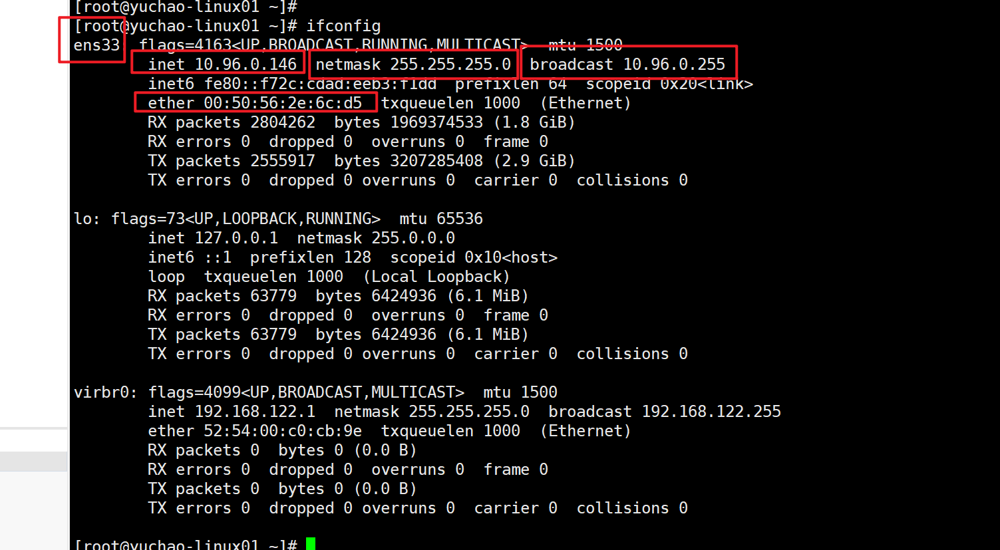
启动、关闭网卡
注意不要在服务器上随便执行，网络断了，远程连接也就挂了。你只能在虚拟机里试一试，学习。
禁用ens33
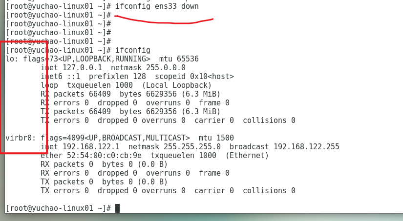
启用ens33
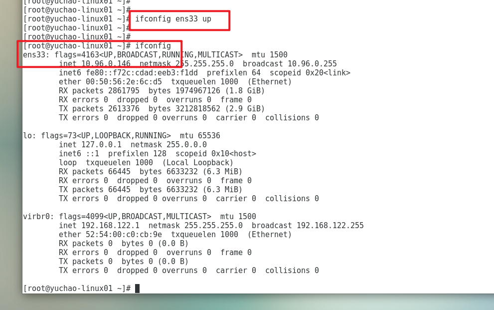
临时设置网络接口(IP)
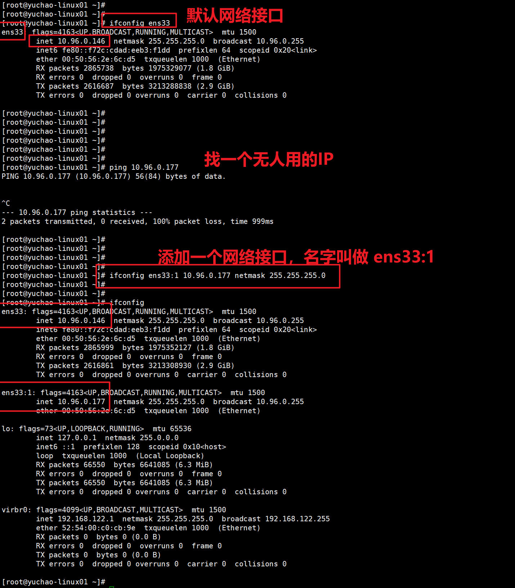
[root@yuchao-linux01 ~]# ping 10.96.0.177
PING 10.96.0.177 (10.96.0.177) 56(84) bytes of data.
64 bytes from 10.96.0.177: icmp_seq=1 ttl=64 time=0.029 ms
64 bytes from 10.96.0.177: icmp_seq=2 ttl=64 time=0.036 ms
永久设置新IP
记住了，如果命令操作，只是临时修改数据，重启系统后该数据会丢失，数据是写入在内存里的。
数据如果写入到磁盘后，也就是永久生效了。
[root@yuchao-linux01 ~]# cp /etc/sysconfig/network-scripts/ifcfg-ens33 /etc/sysconfig/network-scripts/ifcfg-ens33:1
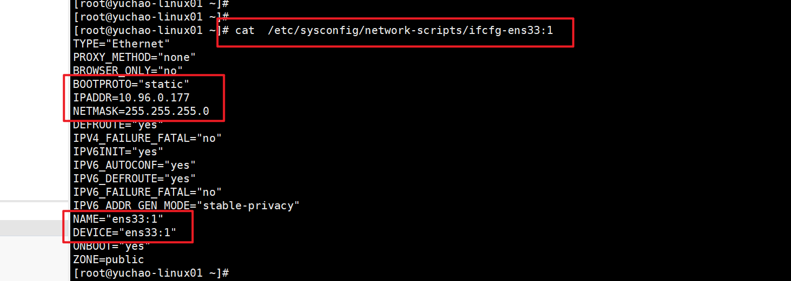
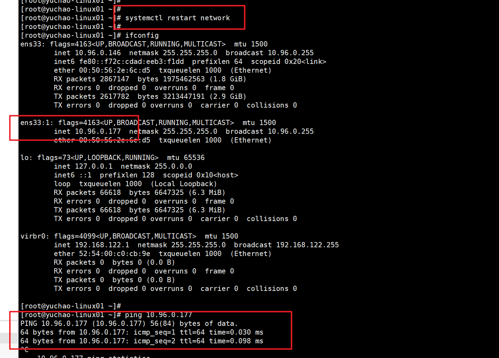
可以reboot，重启机器后，再看看，IP信息
此时可以用新IP连接了。
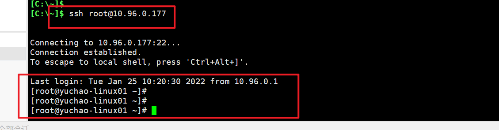
ip命令
ip是iproute软件包里面的一个强大的网络配置工具，用于显示或管理Linux系统的路由、网络设备等。
显示网卡信息
同一个命令的，多个写法
ip a
ip addr
ip address
ip address show
都是查看网络信息的意思，且默认查看所有网卡
单独查看ens33信息
[root@yuchao-linux01 ~]# ip addr show ens33
2: ens33: <BROADCAST,MULTICAST,UP,LOWER_UP> mtu 1500 qdisc pfifo_fast state UP group default qlen 1000
link/ether 00:50:56:2e:6c:d5 brd ff:ff:ff:ff:ff:ff
inet 10.96.0.146/24 brd 10.96.0.255 scope global noprefixroute dynamic ens33
valid_lft 1430sec preferred_lft 1430sec
inet6 fe80::f72c:cdad:eeb3:f1dd/64 scope link noprefixroute
valid_lft forever preferred_lft forever
查看机器路由信息
[root@yuchao-linux01 ~]# ip route
default via 10.96.0.2 dev ens33 proto dhcp metric 100
10.96.0.0/24 dev ens33 proto kernel scope link src 10.96.0.146 metric 100
192.168.122.0/24 dev virbr0 proto kernel scope link src 192.168.122.1
这个10.96.0.0.就是vmnet8虚拟交换机了
域名解析
域名解析就是将名字和IP做了一个对应关系，让人类可以更轻松的记忆主机名。
比如www.yuchaoit.cn、www.baidu.com
那么，系统是如何认识这个域名的，是因为存在关于DNS的配置
/etc/resolv.conf
Linux 中可以通过 /etc/resolv.conf 文件配置 DNS 服务器的地址。
1.修改 /etc/resolv.conf
[root@yuchao-linux01 ~]# cat /etc/resolv.conf
# Generated by NetworkManager
search localdomain
nameserver 119.29.29.29
2.查看域名解析
[root@yuchao-linux01 ~]# ping yuchaoit.cn
PING yuchaoit.cn (123.206.16.61) 56(84) bytes of data.
64 bytes from 123.206.16.61 (123.206.16.61): icmp_seq=1 ttl=128 time=13.9 ms
64 bytes from 123.206.16.61 (123.206.16.61): icmp_seq=2 ttl=128 time=11.9 ms
^C
--- yuchaoit.cn ping statistics ---
2 packets transmitted, 2 received, 0% packet loss, time 1000ms
rtt min/avg/max/mdev = 11.961/12.933/13.905/0.972 ms
[root@yuchao-linux01 ~]#
[root@yuchao-linux01 ~]#
[root@yuchao-linux01 ~]# ping baidu.com
PING baidu.com (220.181.38.148) 56(84) bytes of data.
64 bytes from 220.181.38.148 (220.181.38.148): icmp_seq=1 ttl=128 time=11.0 ms
64 bytes from 220.181.38.148 (220.181.38.148): icmp_seq=2 ttl=128 time=12.3 ms
^C
--- baidu.com ping statistics ---
2 packets transmitted, 2 received, 0% packet loss, time 1000ms
rtt min/avg/max/mdev = 11.004/11.691/12.379/0.695 ms
3.关闭该dns解析文件，注释掉
[root@yuchao-linux01 ~]# cat /etc/resolv.conf
# Generated by NetworkManager
search localdomain
#nameserver 119.29.29.29
4.发现无法进行域名解析
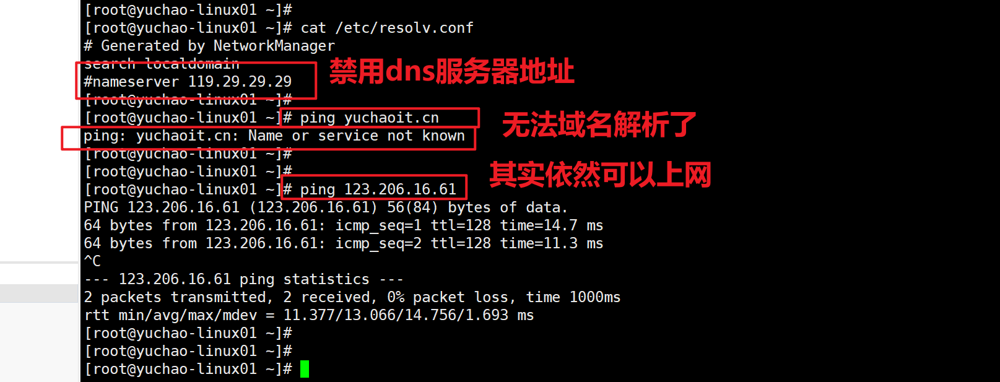
重新打开DNS服务器地址后，即可域名解析。
nslookup命令
nslookup 命令：用于查找域名服务器的程序，nslookup有两种模式：交互和非交互
此命令需要安装
[root@local-pyyu tmp]# yum install bind-utils -y
查看域名解析和dns服务器的关系，通过nslookup命令。
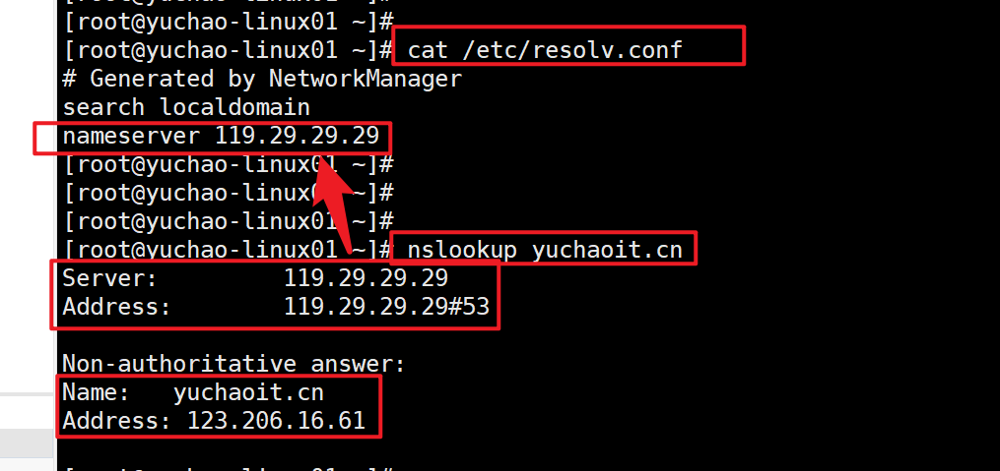
修改dns服务器，常见的公网中DNS服务器
119.29.29.29
114.114.114.114
223.5.5.5
223.6.6.6
一般我们会指定，主备、两个DNS服务器地址。
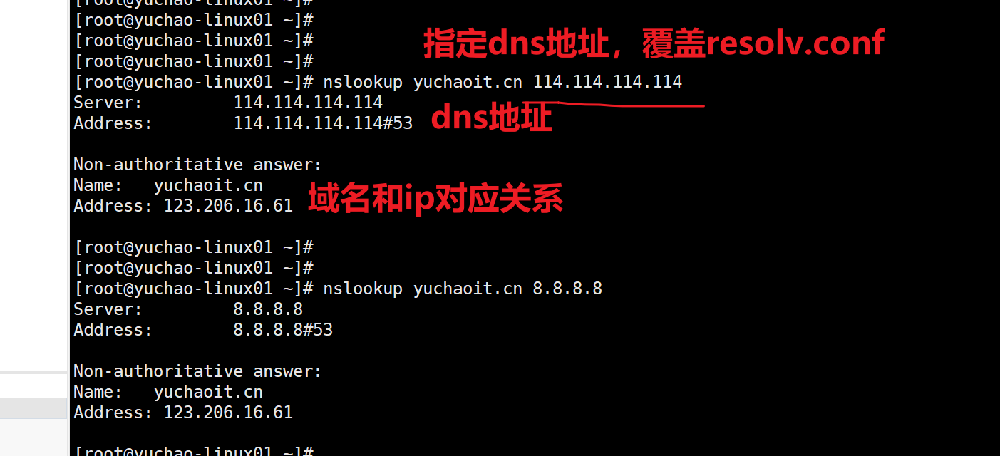
设置静态IP
默认linux我们是通过dhcp动态分配IP地址的，IP地址可能会被抢占，或者变化，后期我们部署服务，一些IP地址信息需要写入文件中，如果还会井变化的话，那就很麻烦了。
1.先确认好网段信息，IP网段、子网掩码、网关，DNS
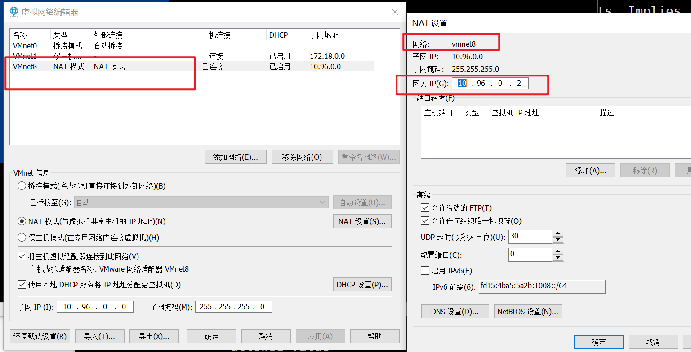
2.修改网卡配置文件
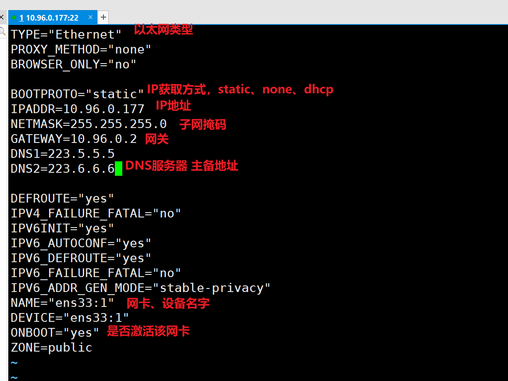
3.重启网络服务
[root@yuchao-linux01 ~]# systemctl restart network
修改主机名
[root@yuchao-linux01 ~]# hostnamectl set-hostname xxxx
关于主机名的配置文件
[root@yuchao-linux01 ~]# cat /etc/hostname
yuchao-linux01
路由学习
- 理解路由表作用
- 阅读路由表信息
- 简单抓包分析，wireshark使用。
什么是路由
什么是交换,什么是路由,什么是路由表？
交换是指同网络访问（两台机器连在同一个交换机上，配置同网段的不同ip就可以直接通迅)
- 使用mac地址，根据mac地址表，转发数据帧。
路由就是跨网络访问，计算机之间的数据传输必须经过网络，网络可以直接连接两台计算机，或者通过一个一个的节点构成。
- 使用IP地址，根据路由表，转发数据包。
- 路由器理解为互联网的中转站，网络中的数据包就是通过一个一个路由器转发到达目的地。
- 路由表是记录路由信息的表，在Linux中⾸先是⼀张可见的，可更改的表，它的作⽤就是当数据包发到Linux的时候，系统（或者说内核)就根据这张表中定义好的信息来决定这个数据包接下来该怎么⾛。
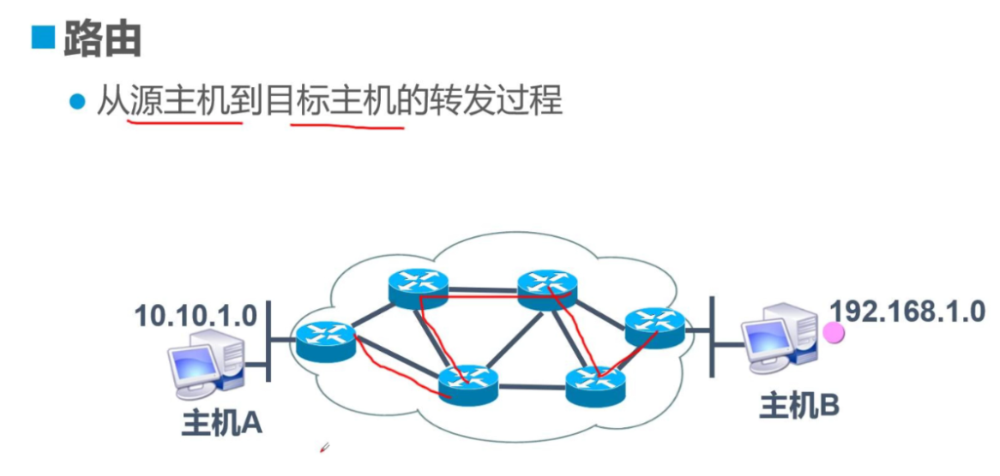
路由如何工作
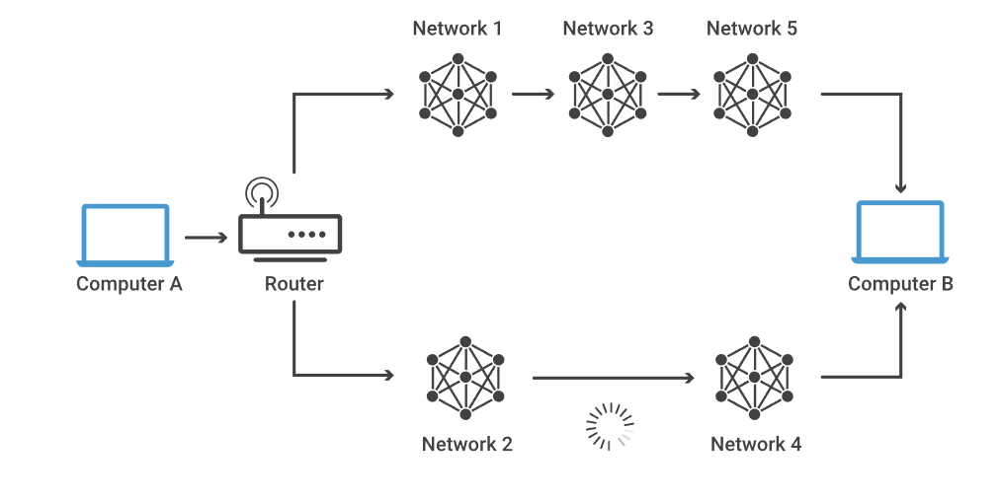
数据从计算机A到B的数据包，这个路由应该走1、3、5还是走2、4路线？
- 数据可能走2、4路径会更短
- 但是走1、3、5可能转发数据包的能力更快
这都是路由器要自动做出的选择。
路由器通过
路由表来决定沿着哪条网络路径行动，路由表记录了数据包应该到达哪个路径。类似于列车的时刻表，乘客需要查阅路线表来决定搭乘哪趟列车。
路由表也是一样的概念。
路由器以每秒数百万次的速度来处理数百万个数据包，当数据包到达目的地时，可能被N个路由器路由了N次。
- 路由表可以是静态的、也可以是动态更新的，动态路由就需要使用各种路由协议，来确定最短、最快的路径。
- 参考理解就是我们用高德地图，你可以选一个固定路线，也可以通过高德提供的强大算法，实时更新最新路况，计算出一个最合适的路线。
关于路由协议
在网络中，协议是格式化数据的标准化方法，因此任何连接的计算机都可以理解数据。
路由协议是用于标识或通知网络路径的协议，你可以理解为（好比你开车，要遵循不同路况的规矩）
以下协议可以帮助数据包在Internet上找到自己合适的路线。
- IP协议：Internet协议明确每个数据包的起点、终点。路由器检查每个数据包的IP头部信息，确认数据要发到哪。.
- 快递有寄出地址、收件地址
- BGP协议：边界网关协议路由协议，属于一种动态路由协议，用来自动的控制哪些IP和哪些网络互相连接。
- OSPF协议：路由器通常使用开放式最短路径优先协议（OSPF）来动态识别最快、最短的可用路由，将数据包发到目的地。
了解即可。
什么是路由器
路由器是一个硬件设备，负责将数据包转发到目的地。
路由器一般连接到两个或者更多的网络，并且在他们之间转发数据包。
路由linux命令
查看路由表route
[root@yuchao-linux01 ~]# route -n
Kernel IP routing table
Destination Gateway Genmask Flags Metric Ref Use Iface
0.0.0.0 10.96.0.2 0.0.0.0 UG 100 0 0 ens33
10.96.0.0 0.0.0.0 255.255.255.0 U 100 0 0 ens33
10.96.0.0 0.0.0.0 255.255.255.0 U 100 0 0 ens33
192.168.122.0 0.0.0.0 255.255.255.0 U 0 0 0 virbr0
目标网络 网关 子网掩码 路由标志(u是up、UG表示该网关是路由器) 网卡
读懂路由信息
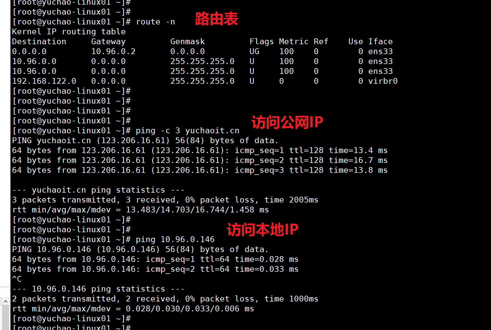
如果ping了一个公网IP，如ping 123.206.16.61
1.目标IP如果是局域网ip，如果是，直接在本地访问；如果不是，去路由表里寻找是否有该网段
2.如果路由表有这个网段，继续从路由条目后面指定的网卡出去（ens33）
3.如果路由表没有这个网段，寻找默认路由（网关）
4.如果网关也没有 ，提示网络不可达。
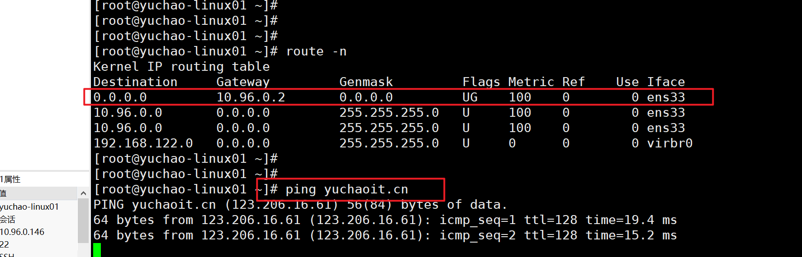
如果ping的是局域网10.96.0.146，直接从本地网卡ens33出去，因为存在路由。
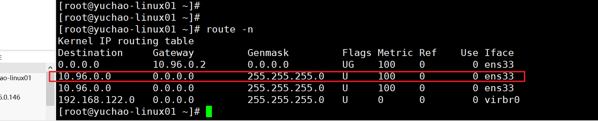
临时删除网关
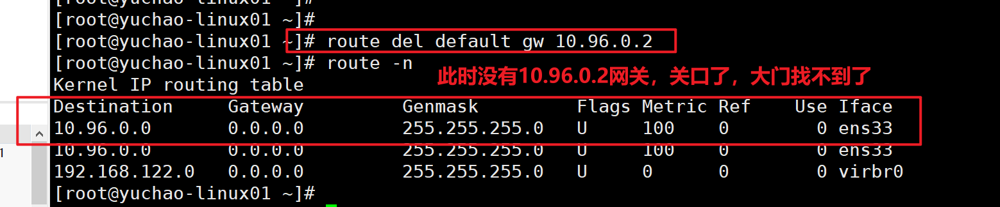
没有路由了，没有路线了，快递都不知道往哪送了、报错了呗。
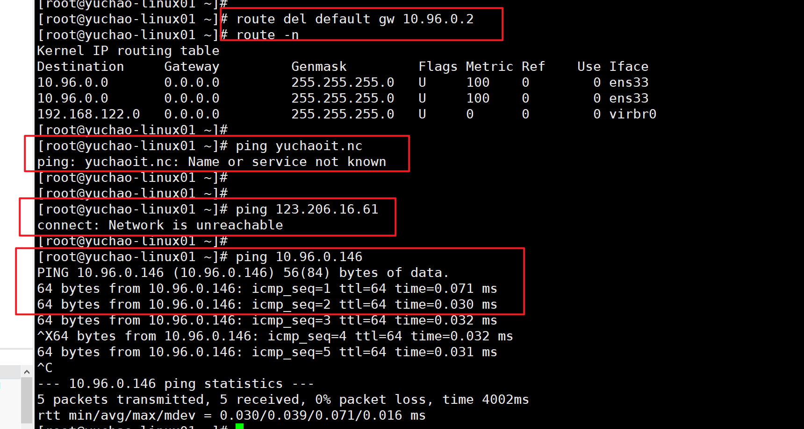
加上路线，加上网关，加上大门，请求就会恢复了。
[root@yuchao-linux01 ~]# route add default gw 10.96.0.2
抓包工具wireshark
Wireshark是世界上最流行的网络分析工具。
这个强大的工具可以捕捉网络中的数据，并为用户提供关于网络和上层协议的各种信息。
[root@yuchao-linux01 ~]# yum install wireshark libpcap -y
启动telnet服务端
我们一切操作，都会产生各种数据包，且都是隐藏在计算机背后的网络数据交互，看不见，摸不着，但是可以通过抓包工具，专门的提取出这些数据包，进行分析。
这一功能，可以让运维同学理解服务启停、部署、运行过程中的网络通信原理，以及故障分析。可以让开发同学，进行接口调试，网页数据提取，比如黑客，是熟练玩转抓包工具的。
简单说，你打开QQ、邮箱，输入账号密码、点击登录，其实计算机背后产生了N多个数据交互，请求与响应，通过抓包工具，甚至可以抓取出账号密码等重要信息。(这只是一个应用场景，还是要遵纪守法)
我们以telnet命令，登录服务器为例，查看数据包
telnet是早期用来登录服务器、交换机的一个指令，但是登录账密是明文的不够安全，后来采用ssh登录linux了。
# 1.安装telnet服务
[root@yuchao-linux01 ~]# yum install telnet-server telnet y
# 2.启动xinetd服务，以及telnet服务
[root@yuchao-linux01 ~]# systemctl start telnet.socket
[root@yuchao-linux01 ~]#
[root@yuchao-linux01 ~]# netstat -tnlp|grep 23
tcp 0 0 0.0.0.0:111 0.0.0.0:* LISTEN 723/rpcbind
tcp6 0 0 :::111 :::* LISTEN 723/rpcbind
tcp6 0 0 :::23 :::* LISTEN 1/systemd
[root@yuchao-linux01 ~]#
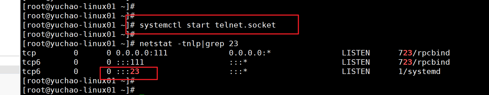
关闭防火墙
[root@yuchao-linux01 ~]# systemctl stop firewalld
windows打开telnet功能
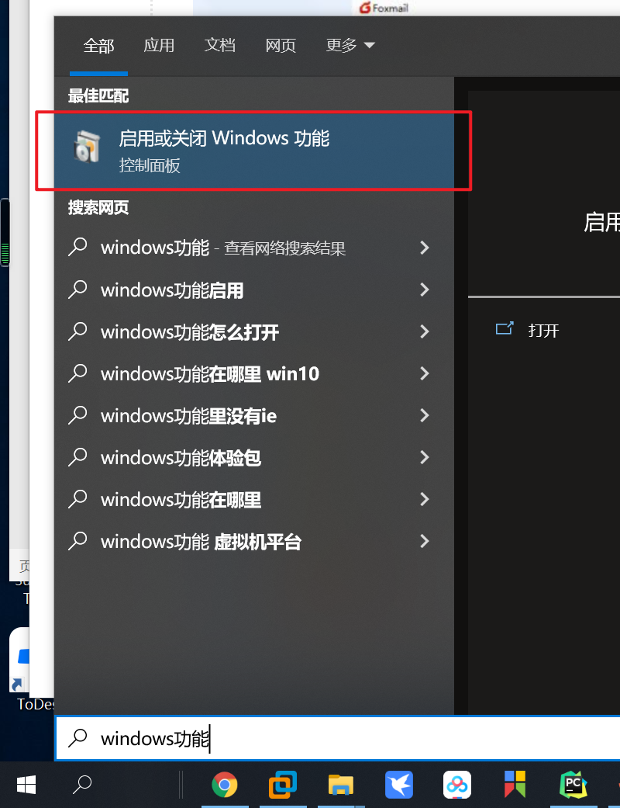
打开telnet客户端
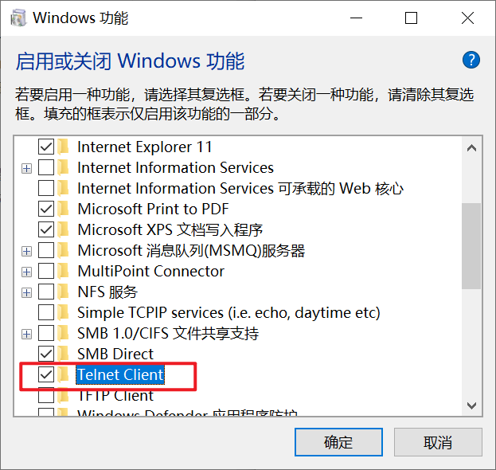
修改linux认证权限
linux默认为了安全性，已经禁用了telnet登录，临时修改这个，可以测验telnet登录。
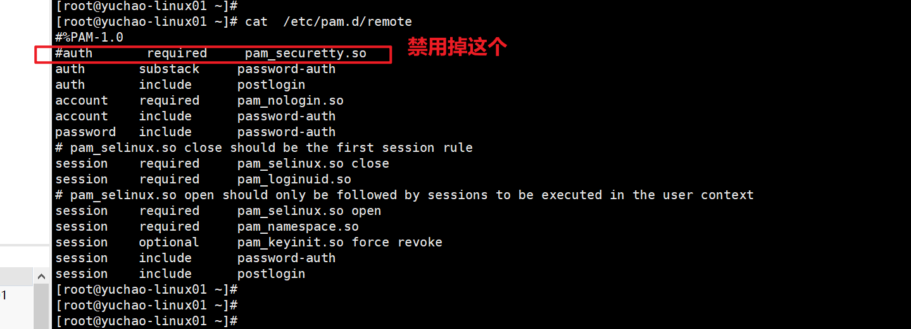
此时可以通过cmd里，使用telnet登录linux了。
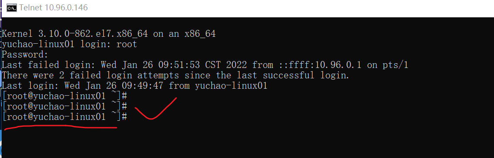
tcpdump工具
我们已经可以通过telnet直接登录了，但是如果我们看不到背后的通信过程，一般只能从 1、命令执行结果 2、日志，这两个方面可以分析。
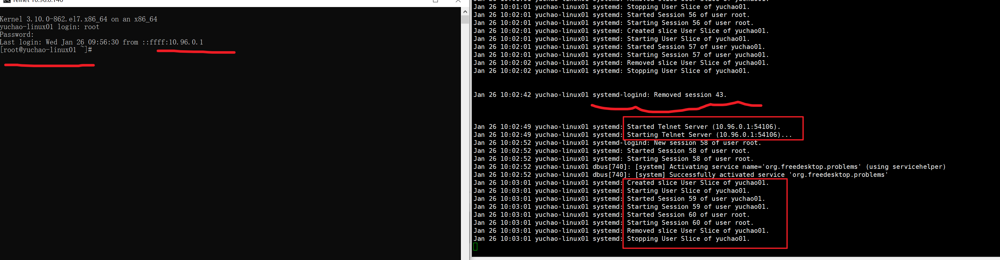
但是当你学习了抓包工具，在发起telnet登录时，是有网络请求发出去的，你抓到这个请求，分析其中的数据包，即可有更多的理解。
tcpdump，顾名思义，明显是对tcp/ip的数据包进行存储。
1.查看arp缓存，查看linux和mac的对应关系
这个10.96.0.1是vmnet8虚拟交换机的IP地址。
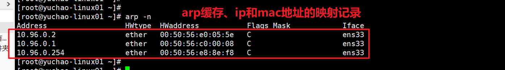
2.删除arp缓存，也就是删除ip和mac的这种解析记录
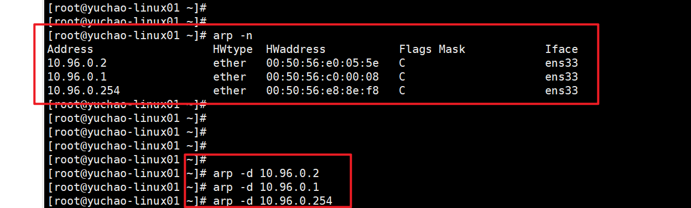
3.抓取网卡流量（注意别用xshell连接，直接用虚拟机）
你在xshell里，一切操作，都是基于ssh的远程发送请求，会产生大量的数据包。
参数解释
-i 指定网络接口
-n 不做域名解析，只显示IP
-nn 不显示协议、端口名字，只显示数字形式的IP、端口
-w 数据保存到文件
如下命令是抓取ens33网卡所有数据包。比如telnet的、ssh的。
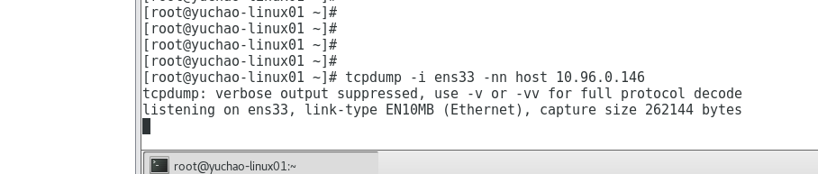
4.发送telnet请求，tcpdump能立即抓到网卡接收到的数据包。
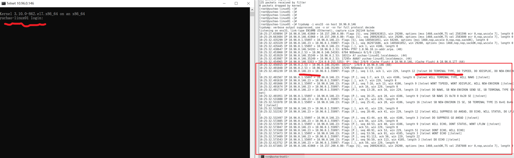
5.指定协议抓取数据包，只抓取tcp的关于telnet的数据包。
[root@yuchao-linux01 ~]# tcpdump -i ens33 tcp port 23 and host 10.96.0.1
tcpdump截取账户密码
tcpdump是linux下的一个抓包工具，因为telnet的报文是使用明文传输的，并没有对报文进行加密，所以可以使用tcpdump获取其登录的账号和密码。
1.截取telnet数据包，保存到文件里再分析。
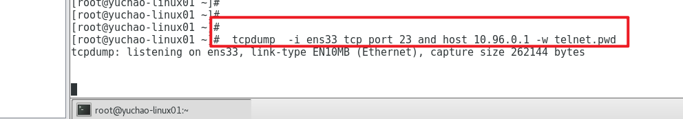
2.客户端登录linux、telnet登录，输入你的账户密码
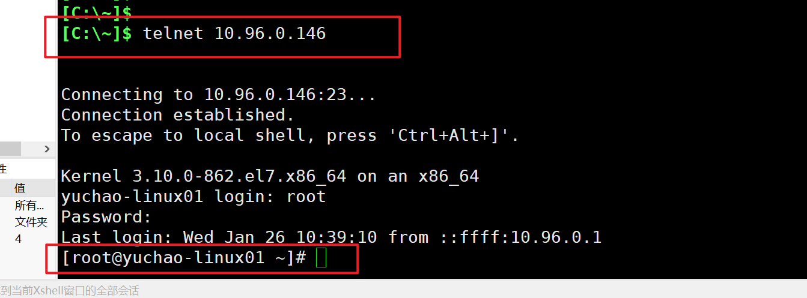
3.关闭linux的tcpdump抓包。
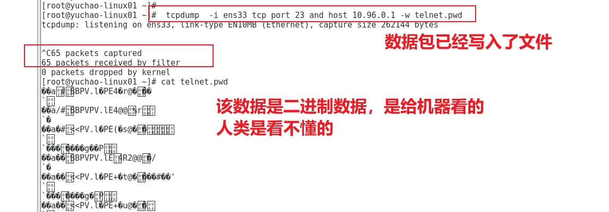
4.把该数据包，发送到windows里，用wireshark工具解析二进制数据。
安装wireshark
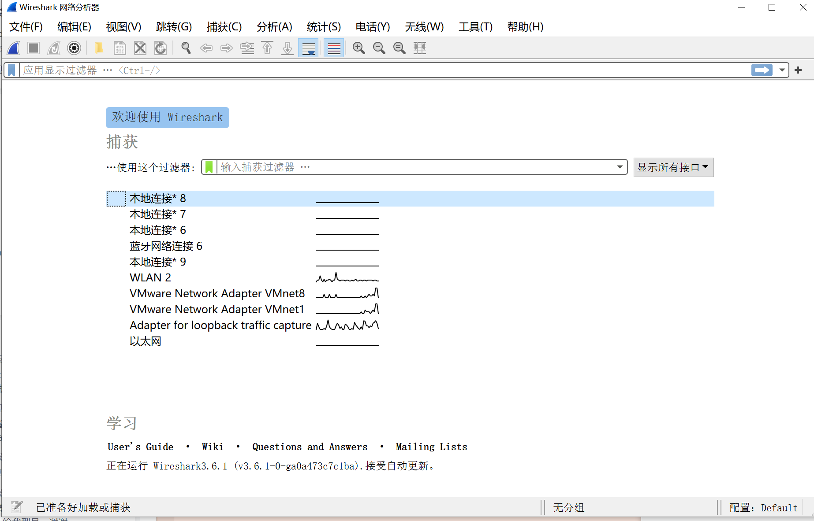
传输通过tcpdump抓取的二进制数据，交给wireshark。
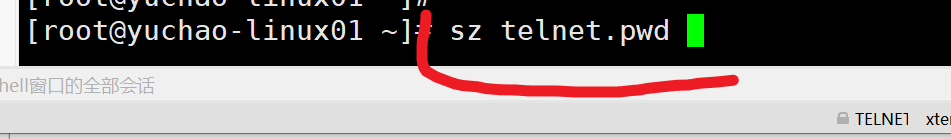
wireshark打开数据包文件。
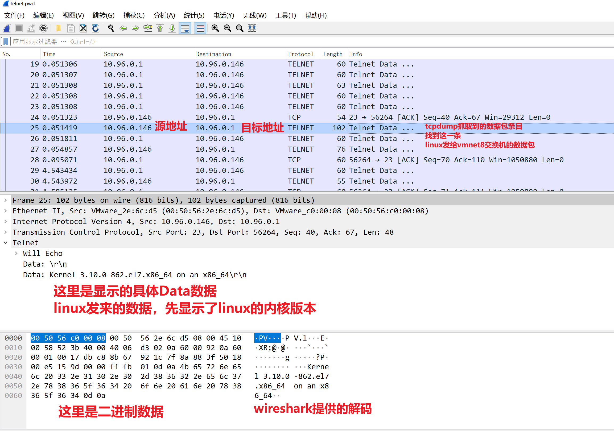
继续向下找，找到关于登录的选项
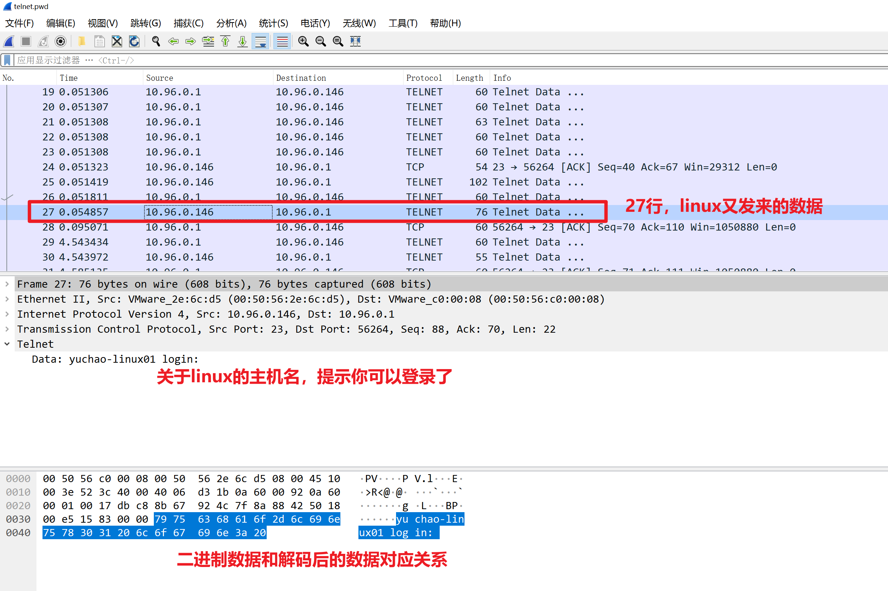
可以看到服务器向发出了login的字符串，此时将会输入root用户名，telnet会将用户名字符串的每个字符使用一个包发送
查看账号的二进制数据包
账号root
一定是寻找，关于telnet的数据包
r
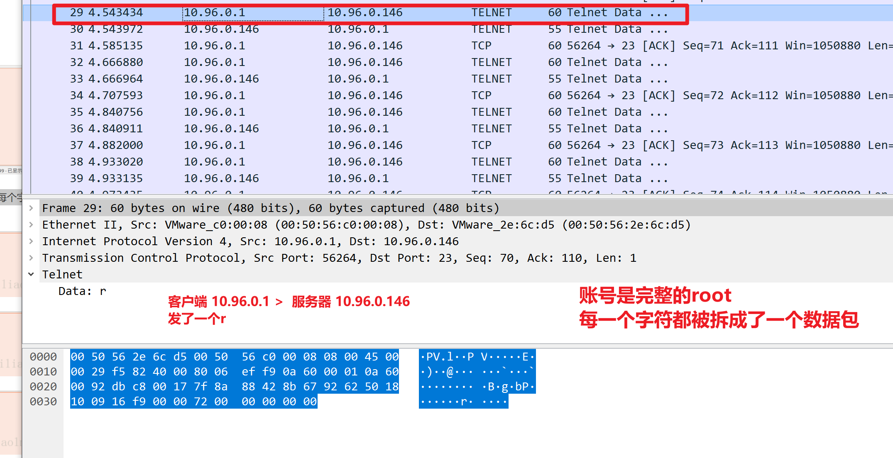
o
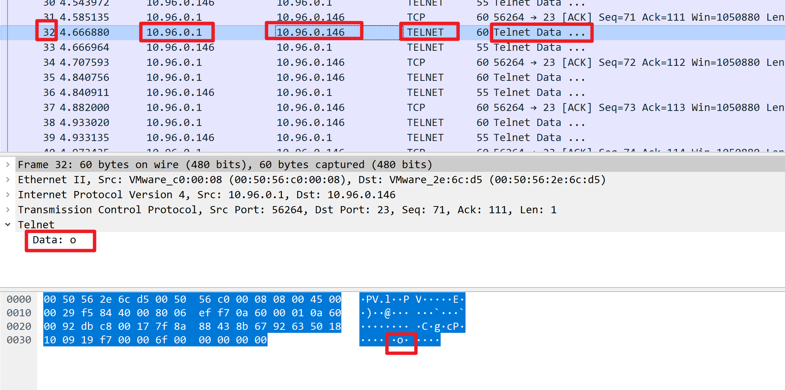
o
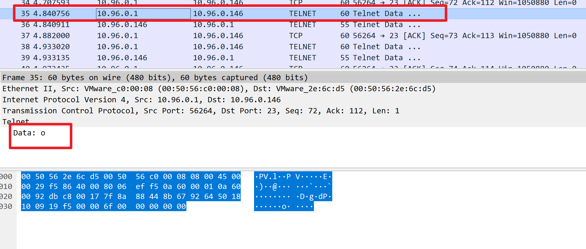
t
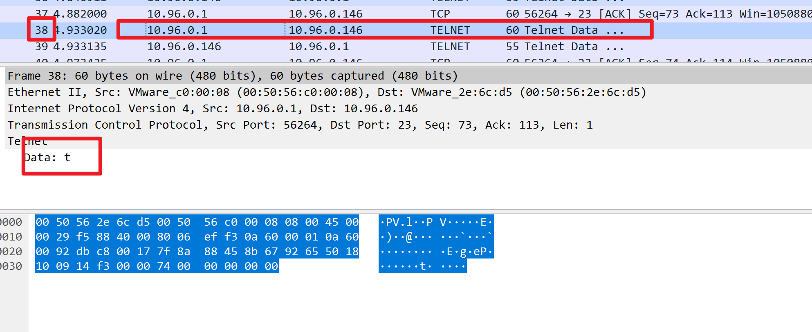
密码123456
开始传输密码了
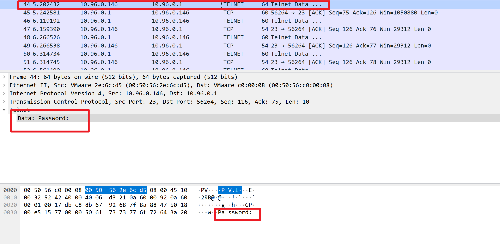
密码的数据包如下
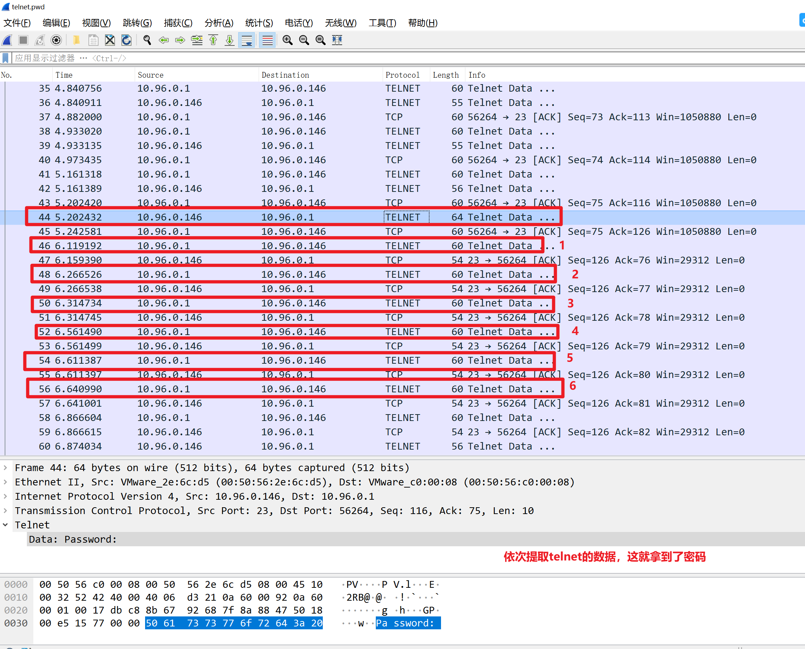
发现的确登录了服务器，也把登录期间的数据，账号，密码，全都拿到了，因此telnet是一个非常不安全的数据明文传输方式。
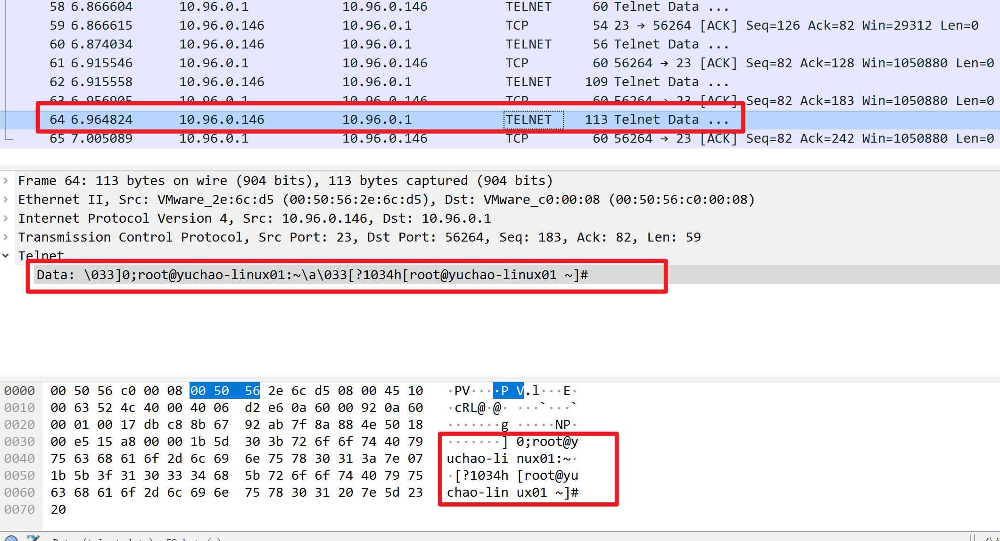